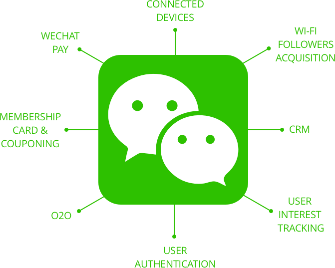
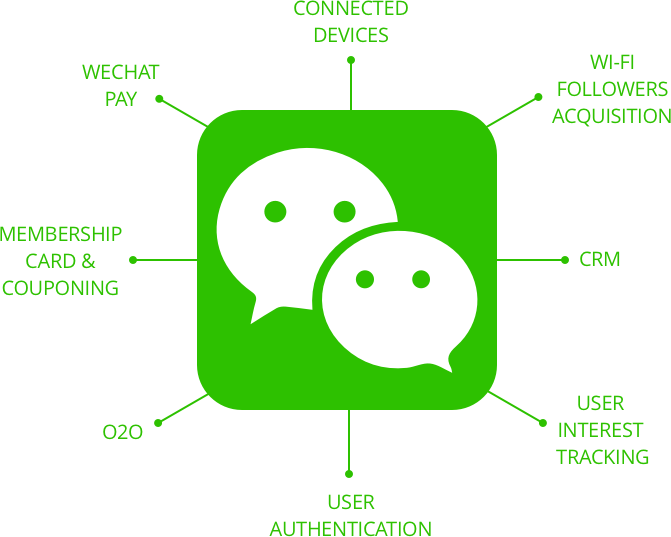

Hujiang CCtalk Windows/Mac C/C++ software developer
沪江 CCtalk 跨平台客户端开发

- Windows/MacOS C/C++ developer
- December 2017 - now
- Desktop Client Group
In China, the Alipay and Wechat-payment is developing rapidly, if banks are staying where it is and do not make any progress, the payment method will change dramatically, the People will put money into the E-banking. So, bank need to catch up with the Alipay and Wechat-payment, with Huge investment. :)
 

This project was a long-term one that started in 2013, as one of the core businesses of DM Group. Because the designer who was responsible for this migration project only 4, I was the Main force in this group. I had to understand all background information of this project very quickly. Also, based on the current design, I needed to develop the on-line steps avoid data confusion.
Because one of my design principle is less is more, I set the goal of my new design as easy-understanding, easy-browsing, easy-using, easy-maintaining.